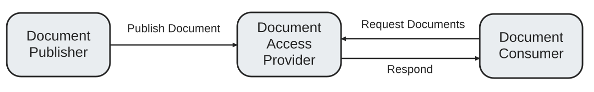
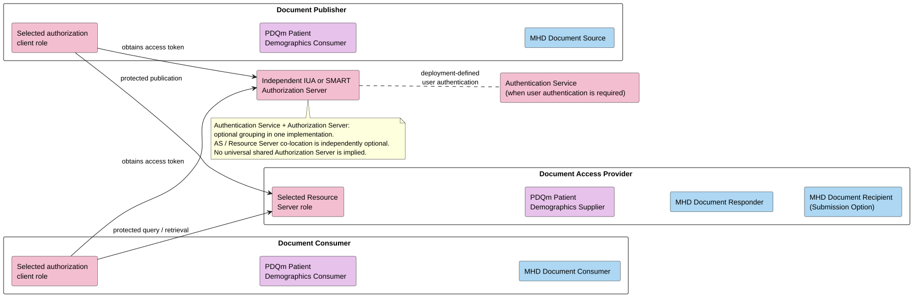
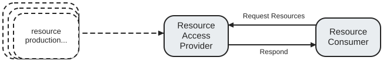
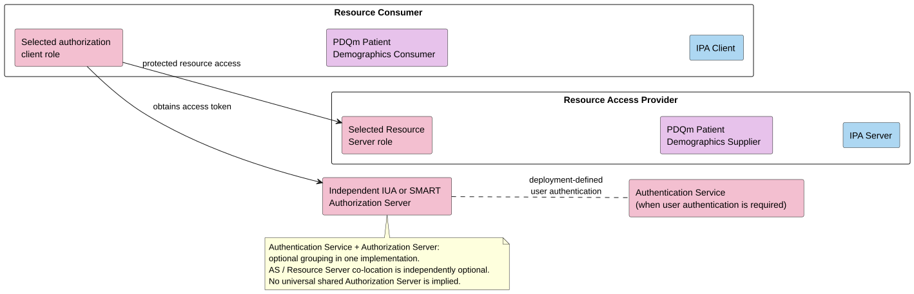
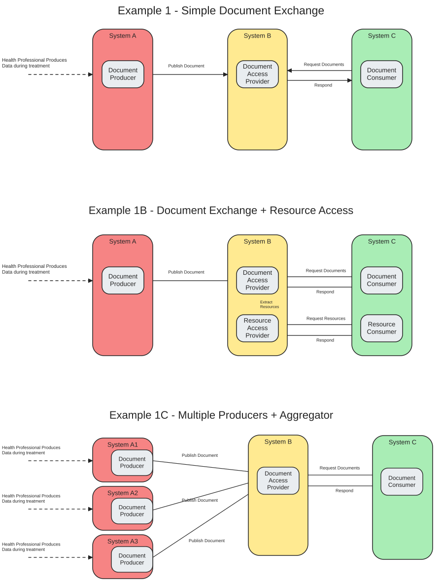
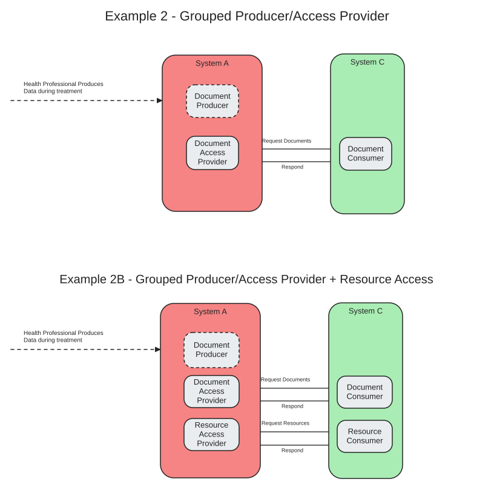
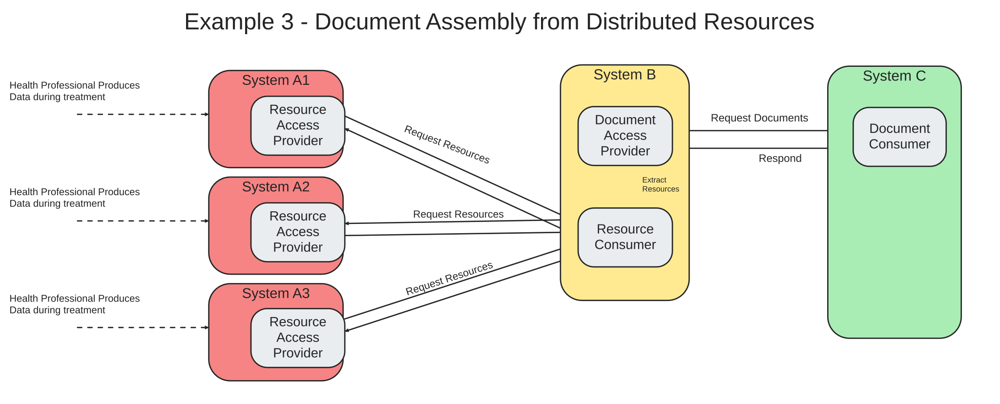

EU Health Data API
1.0.0-ballot - ballot
150
EU Health Data API
1.0.0-ballot - ballot
150
EU Health Data API - Local Development build (v1.0.0-ballot) built by the FHIR (HL7® FHIR® Standard) Build Tools. See the Directory of published versions
The actor model defined here is an orchestration of existing IHE actors and specifications, combined together into high-level composite actors. Actors and transactions are inherited from dependent IHE profiles, and those actors are stacked, constrained and potentially modified.
This is similar to the approach taken in the MHDS specification, but with a more narrow subset of specifications fit to the European situation.
The generic roles are Health Data API Authorization Client, Authentication Service, Health Data API Authorization Server, and Health Data API Resource Server. The Health Data API qualifier identifies logical roles in this specification, not centrally operated EU services. Their deployment and operation are determined by the applicable architecture. Note that these technical roles do not intend to determine the parties' status as controller, joint controller, or processor under GDPR.
The Authentication Service authenticates end users, directly or using a Wallet or upstream identity provider. The Authorization Server relies on an acceptable authentication result where required, applies authorization policy, and issues API access tokens. The Resource Server validates or introspects those tokens and enforces granted authorization and local policy.
Optional grouping: an Authentication Service MAY be grouped with a Health Data API Authorization Server in one implementation. Separate implementations require deployment-defined trust and an authentication interface; this IG does not define an interoperable transaction between them. Grouping does not require an OIDC ID token or app-mediated token exchange. These are logical roles, not a required number of physical servers.
Independently, an Authorization Server MAY be co-located with a Resource Server. Neither grouping is required of a Document Access Provider or Resource Access Provider. The Authentication Service is IG-defined, not an additional formal IUA or SMART actor; the selected protocol's Authorization Server retains its conformance obligations. Pre-authorized Backend Services does not require runtime end-user authentication. See Authentication and API authorization for the flow and trust boundaries.
Document exchange is defined with 3 actors:

These composite actors inherit existing actors from the selected IUA or SMART authorization profile and from the PDQm and MHD specifications:

The diagram shows logical roles for one exchange, not a universal shared Authorization Server. User authentication may be supplied by a separate Authentication Service or the optional grouping described above.
Document Publisher
Document Access Provider
Document Submission Option (when accepting external publication):
Document Consumer
This leads to the following required transactions between these actors:
sequenceDiagram
participant Publisher as Document Publisher
participant Authorization as Authorization Server
participant Provider as Document Access Provider
participant Consumer as Document Consumer
Publisher->>Authorization: Get Access Token (selected IUA or SMART flow)
Authorization-->>Publisher: access_token
Publisher->>Provider: Patient Lookup (PDQm ITI-78)
Provider-->>Publisher: Patient Bundle
Publisher->>Provider: Simplified Publish (MHD ITI-105)
Provider-->>Publisher: Response
Consumer->>Authorization: Get Access Token (selected IUA or SMART flow)
Authorization-->>Consumer: access_token
Consumer->>Provider: Patient Lookup (PDQm ITI-78)
Provider-->>Consumer: Patient Bundle
Consumer->>Provider: Find Document References (MHD ITI-67)
Provider-->>Consumer: DocumentReference Bundle
Consumer->>Provider: Retrieve Document (MHD ITI-68)
Provider-->>Consumer: Document Content
Document publication and consumption transactions
See the following functional pages for detailed transaction information:
This can be combined with content profiles defined by each EHDS Priority Category, for those categories that are primarily represented as a FHIR Document. For example, a system can be a Lab Result Document Publisher, a Patient Summary Document Consumer, or a Imaging Manifest Document Access Provider.
It is also useful in many cases to transact with individual FHIR resources. For this purpose, two resource-based actors are defined:

This version of the IG defines resource search and read access. How resources are supplied to a Resource Access Provider is outside its scope. See Resource Exchange Patterns for background and possible future approaches.
These composite actors inherit existing actors from the selected IUA or SMART authorization profile, PDQm, and International Patient Access (IPA) specifications (with QEDm alignment where compatible):

The Authorization Server is independent of the provider grouping. Authentication Service grouping and Authorization Server / Resource Server co-location are separate optional deployment choices.
Resource Access Provider
Resource Consumer
This leads to the following required transactions between these actors:
sequenceDiagram
participant Provider as Resource Access Provider
participant Authorization as Authorization Server
participant Consumer as Resource Consumer
Consumer->>Authorization: Get Access Token (selected IUA or SMART flow)
Authorization-->>Consumer: access_token
Consumer->>Provider: Patient Lookup (PDQm ITI-78)
Provider-->>Consumer: Patient Bundle
Consumer->>Provider: Resource Query (IPA)
Provider-->>Consumer: Resource Bundle
Resource access transactions
Note: The Authorization Server is a separate protocol participant. It MAY be co-located with a provider as a deployment choice, but co-location does not merge its responsibilities with the Resource Server. See Authorization Server Deployment.



IG © 2025+ HL7 Europe.
Package hl7.fhir.eu.health-data-api#1.0.0-ballot based on FHIR 4.0.1.
Generated
2026-10-23